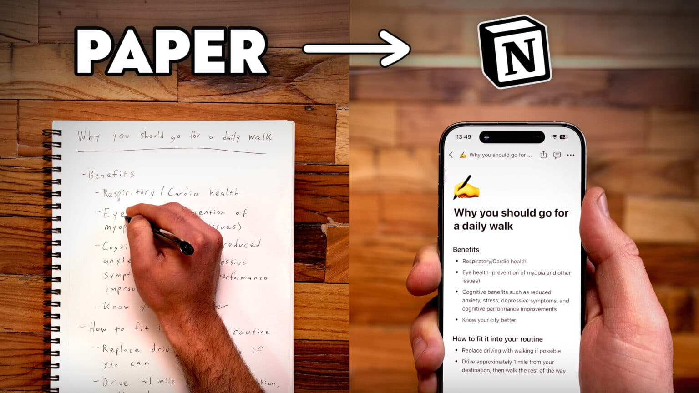
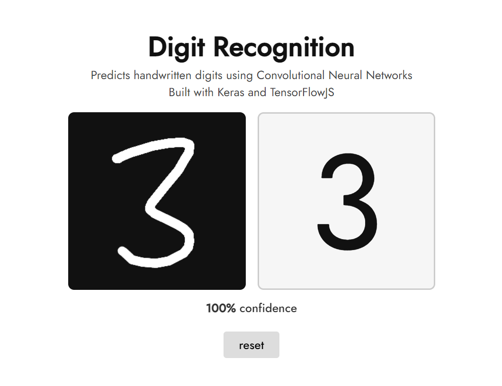

Locked


DigitizeNotes
About: Digitalizing hand written notes (ML)
DigitRecog
About: Handwritten digit recognition using deep learning models (ML)

Customer churn prediction
About: developed a customer churn prediction model for a telephone company using machine learning techniques to identify customers likely to leave and help improve retention strategies.